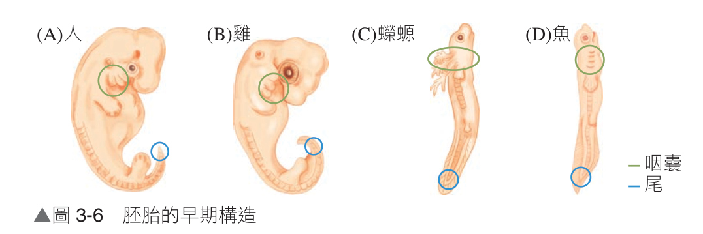
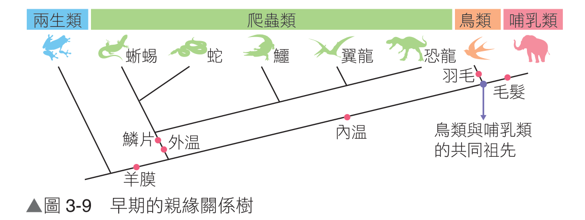
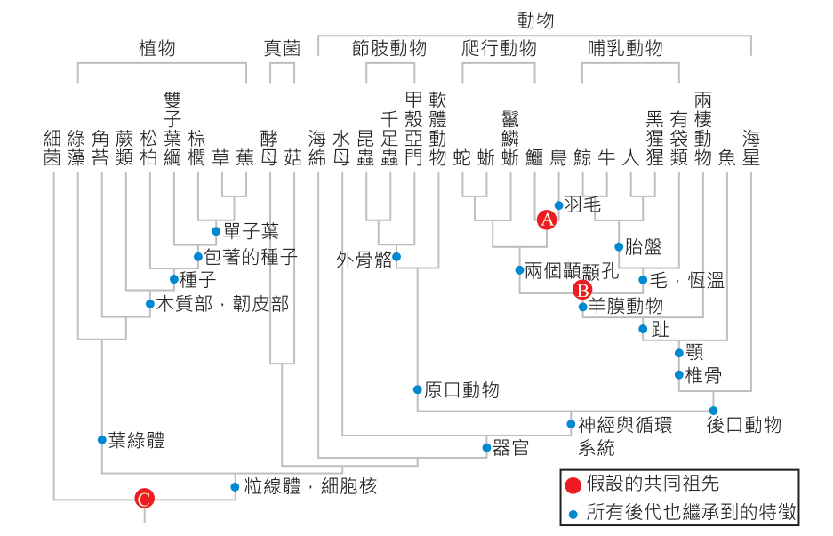

三、胚胎學與分子生物學證據
重點 3
胚胎學證據（發育歷程中的演化重演印記）
1. 基本概念：研究生物從受精卵、囊胚發育至成熟個體之發育歷程。親緣關係較近的生物，其早期胚胎發育過程常展現出極高的相似性。
2. 脊椎動物共同印記：所有脊椎動物（人、雞、蠑螈、魚）在胚胎發育早期均具有咽囊與尾：
• 魚類咽囊發育為鰓；陸生脊椎動物（如人體）咽囊則發育成耳咽管、扁桃腺與咽喉部分構造。
• 人類胚胎早期的尾部在發育後期逐漸退化，僅保留成體殘存的尾椎骨。

▲ 圖 3-6 脊椎動物早期胚胎構造（人、雞、蠑螈、魚早期皆具咽囊與尾部，成體後才分化為不同結構）
重點 4
分子生物學證據（DNA、RNA 與蛋白質序列之客觀定量）
1. 原理：比對不同生物體內普遍共有的生物大分子序列（如細胞色素 c、血紅素蛋白之胺基酸序列，或核糖體 RNA、特定基因之核苷酸序列）。
2. 判斷準則：序列相異數目愈少 ➔ 分歧時間愈晚 ➔ 親緣關係愈接近。
3. 經典數據實例：以人類血紅素 β 鏈之胺基酸序列為基準（相異數 0）：
• 恆河猴相異 8 個 ➔ 與人親緣最近。
• 鼠相異 30 個 ➔ 雞相異 45 個 ➔ 蛙相異 67 個 ➔ 八目鰻相異 125 個（親緣最遠）。
一、親緣關係樹的建構與演化假說之修正
重點 1
早期傳統親緣關係的盲點（受限於表面生理特徵）
| 構造特徵 |
兩生類 |
爬蟲類 |
鳥類 |
哺乳類 |
| 羊膜構造 |
✕ (無羊膜) |
✓ (具羊膜) |
✓ (具羊膜) |
✓ (具羊膜) |
| 保暖羽毛/毛髮 |
✕ |
✕ |
✓ (羽毛) |
✓ (毛髮) |
| 體溫恆定性 |
✕ (外溫動物) |
✕ (外溫動物) |
✓ (內溫動物) |
✓ (內溫動物) |
| 早期錯誤認知 |
早期分類學過度偏重「內溫 vs 外溫」，誤認為鳥類與哺乳類因皆具恆溫生理而擁有較近的共同祖先，並將爬蟲類排斥在外（見圖 3-9）。 |

▲ 圖 3-9 早期繪出的親緣關係樹（錯誤依賴內溫特徵歸群）
🚨 關鍵破綻：「體溫恆定」在鳥類與哺乳類中屬於各自獨立演化出的同功構造，並非同源！若以同功特徵畫樹，必導致錯誤分類。
重點 2
近代重大新證據的衝擊
① 始祖鳥化石的雙重特徵：兼具鳥類特徵（羽毛、翼）與爬蟲類原始特徵（喙內有牙齒、翼端具爪、長骨質尾椎）。
② 有羽恐龍化石陸續出土：中華龍鳥、尾羽龍等恐龍化石證實，羽毛早在鳥類出現之前即於獸腳類恐龍中演化誕生！
③ 分子生物學比對：核酸與蛋白質序列證實，鳥類與現代鱷魚的親緣關係，遠比鳥類與哺乳類接近！
三、赫尼格支序演化學派（Cladistics）三大分類群判定法則
| 分類群名稱 |
定義與包含範疇 |
支序學派是否認可 |
高中經典實例 |
(甲) 單系群
(Monophyletic) |
包含一位共同祖先及其所繁衍的「所有」後代物種，一刀剪下無遺漏。 |
唯一合理認可之有效分類群！ |
哺乳動物群、被子植物群、原口動物群、後口動物群。 |
(乙) 並系群
(Paraphyletic) |
包含共同祖先，但刻意遺漏了某些特化後代（未涵蓋所有後代分支）。 |
不認可（人為人為殘缺） |
傳統「爬行動物」（因為排除了由其演化而來的鳥類）。 |
(丙) 複系群
(Polyphyletic) |
成員源自不同祖先，僅憑同功特徵硬湊在同一群。 |
絕不認可（完全人為湊雜） |
「恆溫動物群」（將鳥類與哺乳類綁在一起）。 |
解析圖表
現存生物的生命樹（生命主要門類衍徵與親緣分支）

▲ 圖 3-10B 現存生物生命樹（葉綠體、細胞核、外骨骼、羊膜、羽毛等關鍵衍徵）
🎯 圖表核心衍徵導讀：
• 後口動物門：包含海星（棘皮動物）與脊椎動物（人、鳥、爬蟲、鯨）。因此海星跟人的親緣比海星跟螃蟹更近！
• 羊膜動物：具有羊膜卵之共同祖先，繁衍出雙孔類（蜥蜴、蛇、鱷、鳥）與合弓類（哺乳類）。
• 節肢動物：昆蟲與螃蟹同屬節肢動物外骨骼譜系。